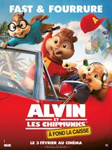
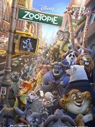

-

Deadpool
PresseSpectateursA l'origine, il s'appelle Wade Wilson : un ancien militaire des Forces Spéciales devenu mercenaire. Après avoir subi une expérimentation hors norme qui va accélérer ses pouvoirs de guérison, il va devenir Deadpool. Armé de ses nouvelles capacités et d'un humour noir survolté, Deadpool va traquer l'homme qui a bien failli anéantir sa vie.
-

Alvin et les chipmunks - À fond la caisse
PresseSpectateursAprès une série de malentendus, Alvin, Simon et Théodore comprennent que Dave va demander sa petite amie en mariage à Miami et risque de les abandonner. Ils ont trois jours pour le retrouver et empêcher ce mariage. Ils se lancent alors dans un road trip à travers l'Amérique : aventure, musique et grosses bêtises.
-
La 5ème vague
PresseSpectateursQuatre vagues d’attaques, chacune plus mortelle que la précédente, ont décimé la presque totalité de la Terre. Terrifiée, se méfiant de tout, Cassie est en fuite et tente désespérément de sauver son jeune frère. Alors qu’elle se prépare à affronter la cinquième vague, aussi inévitable que fatale, elle va faire équipe avec un jeune homme qui pourrait bien représenter son dernier espoir – si toutefois elle peut lui faire confiance…
-

Zootopie
PresseSpectateursZootopia est une ville qui ne ressemble à aucune autre : seuls les animaux y habitent ! Lorsque l'adorable lapine Judy Hopps fait son entrée dans la police, elle s’attaque à une épineuse affaire, l'obligeant à faire équipe avec Nick Wilde, un renard à la langue bien pendue et véritable virtuose de l’arnaque…
-
The revenant
PresseSpectateursDans une Amérique profondément sauvage, Hugh Glass, un trappeur, est attaqué par un ours et grièvement blessé. Abandonné par ses équipiers, il est laissé pour mort. Mais Glass refuse de mourir. Seul, armé de sa volonté et porté par l’amour qu’il voue à sa femme et à leur fils, Glass entreprend un voyage de plus de 300 km dans un environnement hostile, sur la piste de l’homme qui l’a trahi. Sa soif de vengeance va se transformer en une lutte héroïque pour braver tous les obstacles, revenir chez lui et trouver la rédemption.